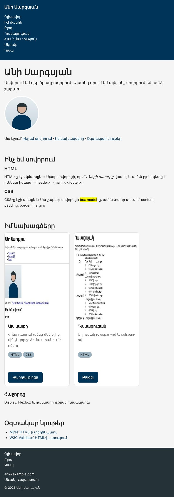
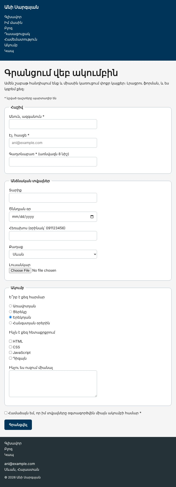

Տնային աշխատանք · HTML Դաս 08 · մինի-նախագիծ
Կայքի բացակները դառնում են համակարգ, բովանդակությունը կենտրոնանում է, իսկ գլխավոր էջում հայտնվում են նախագծերի քարտեր։
Օգտագործիր միայն Դաս 01–08-ը։ Քարտերը կողք կողքի դնում ենք inline-block-ով (այն կա Դաս 06-ի global.css-ում և Դաս 08-ի կոճակում)։ display-ի մանրամասները Դաս 09-ում են, Flexbox-ը՝ Դաս 11-ում։
Ժամանակավոր բացակները փոխարինվում են իսկական համակարգով։ Բովանդակությունը կենտրոնացված է, գլխավոր էջում հայտնվում են նախագծերի քարտեր, իսկ ֆորման դառնում է կոկիկ։


Սկսիր Դաս 07-ի քո կայքից։ Եթե այն չունես, վերցրու Դաս 07-ի օրինակը։
Ընտրիր որևէ section և նայիր Computed ներդիրի տուփի դիագրամին՝ content, padding, border, margin։ Այս դասի ընթացքում ամեն փոփոխություն ստուգիր այս դիագրամով։
/* Տարրերի ՄԻՋԵՎ՝ margin, ներսում՝ padding */
h1, h2, h3, h4 { margin-bottom: 12px; }
p, ul, ol, table, figure, blockquote { margin-bottom: 16px; }
header,
footer { padding: 16px 20px; }
main {
max-width: 960px;
margin: 0 auto; /* կենտրոնացում */
padding: 0 20px;
}
section { padding: 32px 0; }Ջնջիր max-width-ը։ margin: 0 auto-ը դադարում է կենտրոնացնել, որովհետև main-ը արդեն զբաղեցնում է ամբողջ լայնությունը, և կողքերում ազատ տեղ չկա բաժանելու։ Վերադարձրու։
Օգտագործում ենք միայն margin-bottom։ Եթե վերնագիրն ունենար margin-top: 20px, իսկ նախորդ պարբերությունը՝ margin-bottom: 16px, նրանց միջև կլիներ 20px, ոչ 36px։ Մեկ ուղղությամբ բացակները պարզեցնում են հաշվարկը։
global.css-ի reset-ում արդեն կա box-sizing: border-box։ Ձևի դաշտերին տվել ենք width: 100% և padding: 8px 12px։ Ժամանակավորապես գրիր * { box-sizing: content-box; } և նայիր․ դաշտերը դուրս են գալիս իրենց խմբից, որովհետև padding-ը գումարվում է 100%-ին։
<article class="card">
<img src="images/project-site.jpg" alt="Անիի կայքի գլխավոր էջի սքրինշոթը" width="600" height="400">
<div class="card__body">
<h3 class="title-4">Այս կայքը</h3>
<p class="text-muted">Հինգ դասում աճեց մեկ էջից մինչև յոթը։</p>
<p><span class="pill">HTML</span> <span class="pill">CSS</span></p>
<a href="pages/blog.html" class="btn">Կարդալ բլոգը</a>
</div>
</article>.card {
display: inline-block; /* կողք կողքի․ Flexbox-ը՝ Դաս 11-ում */
width: 300px;
margin: 0 16px 16px 0;
background-color: var(--surface);
border: 1px solid #e0e0e0;
border-radius: 12px;
overflow: hidden; /* նկարը կկտրվի կլորացման տակ */
}
.card img { display: block; width: 100%; }
.card__body { padding: 16px; }width և height 160px, border-radius: 50%։ Փորձիր նույնը ոչ քառակուսի տուփի վրա․ կստացվի էլիպսborder-radius: 6pxborder-radius: 999px, որ միշտ լինի «դեղահատ», ինչ բարձրության էլ լինիmin-height, ոչ height։ Ավելացրու երկար տեքստ և համեմատիրfieldset-ին՝ padding, եզրագիծ և կլորացում։ Դաշտերին՝ width: 100% և max-width: 400px։ Սելեկտորը՝ input[type="text"] և նմանները (Դաս 06), որ checkbox-ները և radio-ները չձգվեն ամբողջ լայնությամբ։
max-width + margin: 0 auto-ովinline-block-ով| Սխալ | Ինչպես ուղղել |
|---|---|
| Քարտի նկարի անկյունները դուրս են գալիս կլորացումից | Քարտին՝ overflow: hidden |
| Քարտերը մեկը մյուսի տակ են | Էկրանը նեղ է երկու 300px քարտի համար, կամ մոռացել ես display: inline-block-ը |
| Քարտերը տարբեր բարձրության վրա են սկսվում | inline-block-ը հավասարեցնում է ըստ վերջին տողի։ Լուծումը՝ Դաս 09-ում (vertical-align) |
| Երկու տարրի միջև բացակը սպասվածից փոքր է | Margin collapse․ երկու ուղղահայաց margin-ից մնում է մեծը |
Սրանք Դաս 08-ի տնային աշխատանքի կետերն են։ «մինի-նախագծում» նշվածները արդեն կատարել ես վերևի քայլերում, մնացածը կատարիր առանձին ֆայլերում կամ նույն թղթապանակում։
padding-ը չորս ձևով՝ 1, 2, 3 և 4 արժեքով։ Նկարագրիր ամեն մեկի արդյունքը։box-sizing-ի տարբերությունը՝ երկու նույնական բլոկ, տարբեր box-sizing։ Չափիր DevTools-ով։ մինի-նախագծումpadding-ի անցնելով։margin-ը դուրս է գալիս ծնողից։ Ուղղիր երեք ձևով։margin: 0 auto-ով։ Հետո ջնջիր max-width-ը և բացատրիր, ինչու դադարեց աշխատել։ մինի-նախագծում50%-ի հետ ոչ քառակուսի տուփի վրա։ մինի-նախագծումheight-ը և min-height-ը երկար տեքստով։ մինի-նախագծումglobal.css-ում picture-ի և img-ի կանոնները (picture թեգը կօգտագործենք Դաս 16-ից, կանոնն արդեն պատրաստ կլինի)։ Նեղացրու պատուհանը և ցույց տուր, որ max-width: 100%-ով նկարը այլևս դուրս չի գալիս իր տուփից։ մինի-նախագծումdisplay: inline-block-ով — Flexbox-ը հաջորդ դասերին է)։ մինի-նախագծումԵրբ բաժին 03-ի բոլոր կետերը նշված են, բացիր օրինակը և քո էջը կողք կողքի։ Բացիր երկուսի կոդն էլ խմբագրիչում։ Գտիր մեկ բան, որ դու արել ես այլ կերպ, և մտածիր՝ որն է ավելի հասկանալի և ինչու։ Քո լուծումը կարող է տարբերվել և լինել ճիշտ։